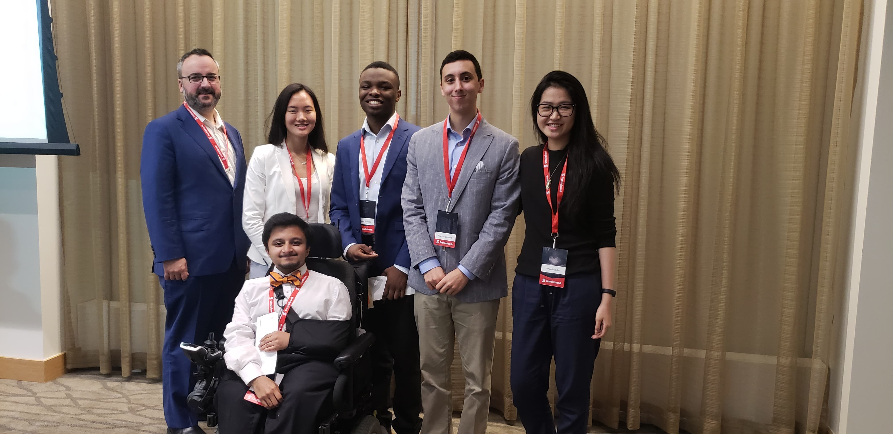

It's nice to meet you
My name is Angelina Jin, a second year Computer Science and Business Administration
Double Degree student at the University of Waterloo and Wilfrid Laurier University.
I am current the Chair of Finance @ UW Women in Computer Science Undergraduate Committee
and would love to chat about diversity in tech!

6ixth Sense
iOS application and vibrational language that improves the safety of the visionally-impaired at busy intersections using real-time object
detection by producing unique vibrational patterns on a user’s smart device or Fitbit.
- YOLO V3, Tensorflow, Core ML, Fitbit OS SDK, Javascript -
Hack the 6ix 2018

Scotiabank Future Leader Challenge
Annual three month long case competition against 200+ summer students devising the best corporate strategy to strength company culture and values.
- 2nd Place out of 41 teams -
Presented project in front of Senior Vice Presidents of Scotiabank
Android application providing a mental health support platform for anonymous user-advisor discussion, self-affirmations and daily objectives.
- Android Studio, Firebase API -
Hack the North 2017

LOCFRESH
A smart home storage ecosystem that reduces food wastage using visual indicators, push-notifications, and AI.
- Semifinalist out of 1100+ students -
New Venture Competition 2018 - Wilfrid Laurier University
Stay tuned for future blog posts!
Topics include:
Freshmen: A Year in Review
Identity and Overcoming Imposter Syndrome
One Second A Day: From Video Diary to Self Confidence
Networking as an Individual in Tech